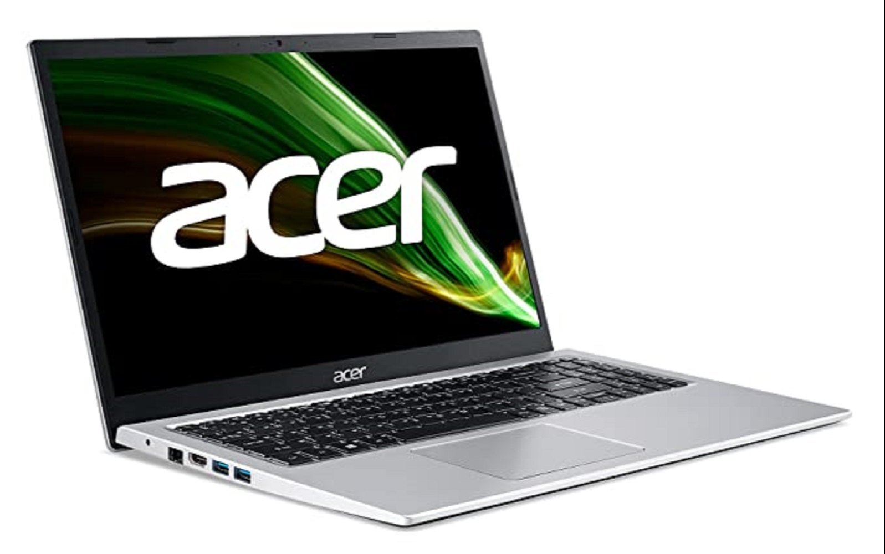
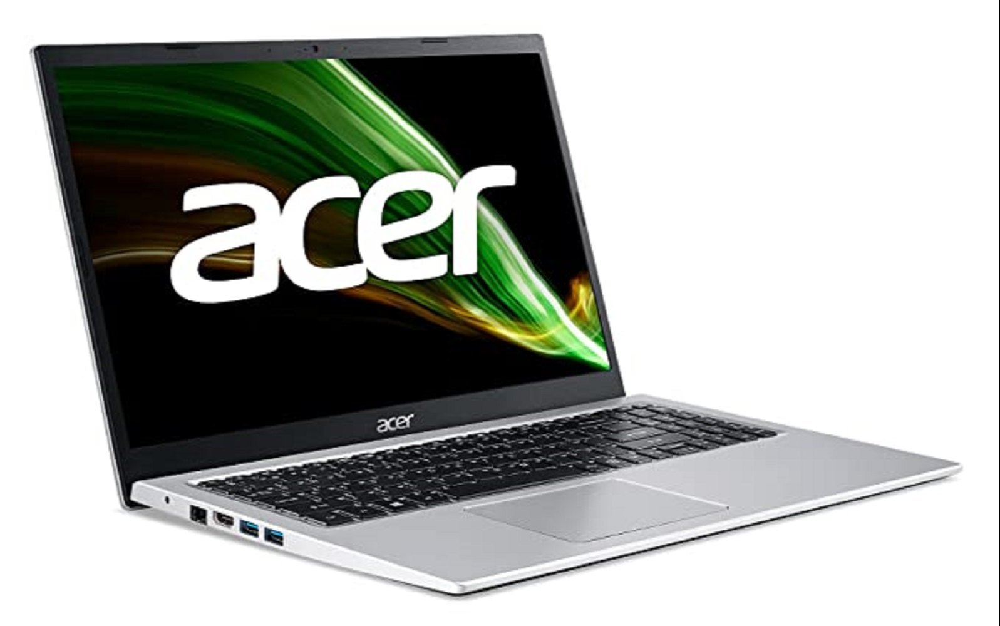

Laptops


 

Introduction
Laptops are portable personal computers that integrate the components of a desktop computer into a single compact unit.
They are designed for mobile use and are widely used for various purposes, including personal,educational, and
professional tasks. Here’s an overview of key information about laptops.
Click here and move down to check the links for more laptops info
1. Components of a Laptop:
- Display: Laptops typically have a built-in screen, ranging from 11 to 17 inches or more, with various resolutions (HD, Full HD, 4K).
- Keyboard and Touchpad: Most laptops come with a built-in keyboard and a touchpad for navigation, eliminating the need for external peripherals.
- Processor (CPU): The central processing unit is the brain of the laptop, determining its performance. Common brands include Intel and AMD.
- Memory (RAM): Random Access Memory is used for temporary data storage while the laptop is running. More RAM allows for better multitasking.
- Storage: Laptops can have Hard Disk Drives (HDD) or Solid State Drives (SSD) for permanent data storage. SSDs are faster and more reliable than HDDs.
- Battery: Laptops are equipped with rechargeable batteries, allowing for use without being plugged into a power source. Battery life varies by model and usage.
- Graphics Card: Integrated or dedicated graphics cards handle rendering images and video. Dedicated graphics cards are better for gaming and graphic-intensive tasks.
2. Types of laptops
- Ultrabooks: Thin, lightweight laptops with long battery life, designed for portability and performance.
- Gaming Laptops: High-performance laptops with powerful CPUs and dedicated graphics cards, designed for gaming and graphic-intensive applications.
- 2-in-1 Laptops: Convertible devices that can function as both a laptop and a tablet, featuring touchscreens and detachable keyboards.
- Business Laptops: Designed for professional use, these laptops often have enhanced security features, durability, and longer battery life.
- Chromebooks: Lightweight laptops that run on Chrome OS, primarily designed for web-based applications and cloud storage.
3. Some Advantages of laptops:
- Portability: Laptops are designed for mobility, allowing users to work or study from virtually anywhere.
- All-in-One Design: They combine all necessary components into a single device, reducing clutter and the need for multiple peripherals.
- Battery-Powered: Laptops can operate without being plugged in, making them ideal for travel and remote work.
- Versatility: Suitable for a wide range of tasks, from basic web browsing and document editing to gaming and graphic design.
4. Popular Laptop Brands
- Apple: Known for its MacBook line, which includes the MacBook Air and MacBook Pro, known for their design and performance.
- Dell: Offers a wide range of laptops, including the XPS series for high performance and the Inspiron series for everyday use and Alienware for high end gaming.
- HP (Hewlett-Packard): Known for its Pavilion and Spectre series, catering to both casual users and professionals.
- Lenovo: Offers the ThinkPad series for business users ,the Yoga series for versatile 2-in-1 devices and legion and LOQ series for gaming.
- Acer: Provides a variety of laptops, including budget-friendly options and high-performance gaming laptops.
- Asus: Known for its ROG (Republic of Gamers) series for gaming and ZenBook series for ultrabooks.
Conclusion
Laptops have become an essential tool in modern life, providing flexibility and convenience for users across various fields. With advancements
in technology, laptops continue to evolve, offering improved performance, battery life, and features to meet the needs of users.
| Famous Laptops brands |
| Dell |
HP |
Lenovo |
| Apple |
Acer |
Asus |
| Microsoft |
Razer |
Samsung |
Check this for more info
Check Dell Laptops
Check Lenovo laptops
© 2025 Laptop Information. All rights reserved.